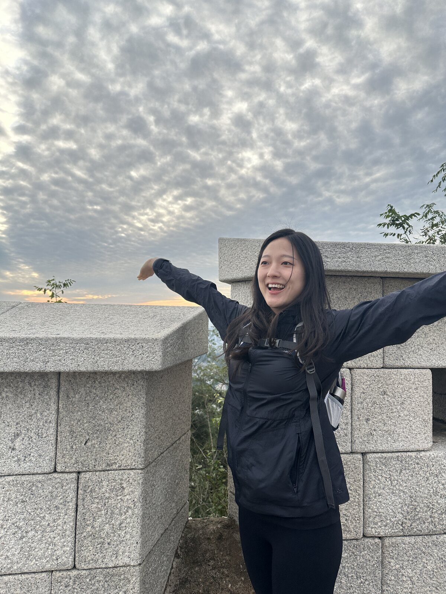

Physical–virtual modeling
Building models that bring properties such as friction and mass into virtual settings, enabling richer multimodal interaction between physical and digital objects.
Hello, I’m
Ph.D. student working on mixed reality and spatial computing systems.
I am a Ph.D. student in Computer Science and Engineering at Seoul National University, advised by Prof. Youngki Lee in the Human-Centered Computer Systems Lab. My research looks at how virtual content can respond more naturally to the physical world, and how people can share mixed-reality spaces across distance.
Currently: I’m looking for internship opportunities.

Research
I study the systems and interaction models needed to make mixed-reality experiences more responsive, realistic, and socially connected.
Building models that bring properties such as friction and mass into virtual settings, enabling richer multimodal interaction between physical and digital objects.
Designing low-intensity communication that lets people blend remote spaces while preserving the subtle interaction cues that make shared experiences feel present.
Projects
Research projects at the intersection of computing and everyday experience.
Ongoing project
A dance-learning project exploring how tutorial videos can break choreography into clear, beginner-friendly instruction while making high-quality guidance easier to scale.
Publications
Paper PDFs, presentation videos, and related links are listed with each publication.
A 20-participant study of how rebound-model fidelity and direct familiarization with real balls and surfaces shape perceived plausibility in mixed reality.
A unified framework that brings real-world analysis and realistic virtual simulation into one mixed-reality execution model.
News
Maestro was accepted to ACM MobiSys 2024. I also participated as a student volunteer.
Attended ACM UbiComp 2023 in Cancún, Mexico as a student volunteer.
Curriculum vitae
Education, publications, experience, awards, and service.